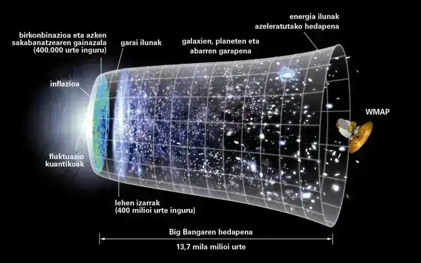
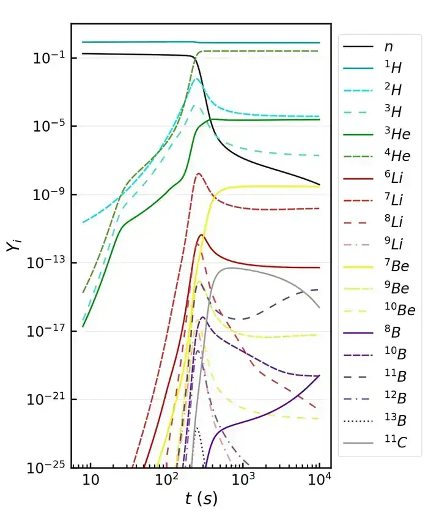
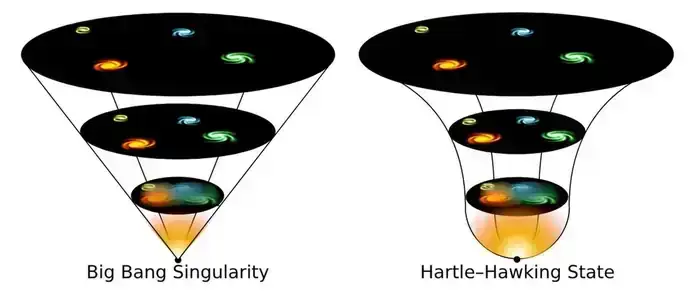

The joke with a serious point
The modern formulation: the world came into existence last Thursday, fully formed, including every memory, every geological layer, every photon already in flight from distant galaxies — arranged so that it looks exactly as old as it appears. You cannot prove otherwise, because every piece of evidence is inside the world that was made.
Maps, diagrams and images






It is usually attributed to a student joke at Oxford in the early 1990s, and it is the sharpest possible parody of a much older problem.
Gosse's Omphalos, 1857
Before the joke, the argument. Philip Henry Gosse, a respected naturalist, published Omphalos: An Attempt to Untie the Geological Knot in 1857 — two years before Darwin's Origin. His problem: geology showed an ancient Earth, while a literal reading of Genesis gave thousands of years.
Gosse's solution was that God created the world with an apparent history built in — “prochronism”. Adam would have had a navel he never needed (hence omphalos, Greek for navel); trees would have had growth rings from a first year that never happened; fossils would exist as a created record of lives never lived.
It was received badly by almost everyone — theologians found it made God a deceiver, and scientists found it useless. Charles Kingsley reportedly called it “a clumsy attempt to make God a liar”. Gosse had argued himself into a position where no observation could count against him, which he seems to have recognised as a virtue.
Russell's five minutes
Bertrand Russell gave the secular version in The Analysis of Mind (1921): the hypothesis that the world sprang into being five minutes ago, exactly as it then was, with a population that “remembered” a wholly unreal past. Russell's point was not that this is likely, but that it cannot be refuted — and that this tells us something about the limits of empirical knowledge rather than about the world.
It has no content. A claim that predicts nothing and forbids nothing cannot be tested, and cannot be used. It does not conflict with geology, cosmology or evolution — it simply declares all of them to be scenery.
It multiplies entities for no gain. The ordinary account (an old universe, with the physics that produces fossils and starlight) explains the same observations with fewer assumptions. Occam's razor is a heuristic, not a proof — but this hypothesis needs an enormous extra assumption and returns nothing.
It is the mirror of the archive's fringe claims. Compare it with Tartaria (all the evidence was destroyed) or the Mandela Effect (the timeline changed and only memory disagrees). Each is a machine for making contrary evidence harmless. Last Thursdayism is the same machine, built openly, as a warning.
Why it still matters
Because “you cannot prove it false” is the single most common defence offered for otherwise unsupported claims — and this thought experiment shows why that defence is empty. Almost any proposition can be protected by an auxiliary assumption that neutralises the evidence. The question is never “can it be refuted?” in the abstract; it is “does it make any prediction that would come out differently if it were wrong?”
For the record: the age of the Earth is about 4.54 billion years, established by radiometric dating cross-checked across multiple independent isotope systems, and corroborated by everything from tree rings to cosmic microwave background measurements. The universe is about 13.8 billion years old. These are not matters of consensus opinion; they are measurements with error bars, and they agree with each other in ways a planted record would have no reason to.
Solipsism: the same knife, pointed inward
Solipsism is the older, purer version: only your own mind is certain to exist. The physical world, other people, history, and this page might all be contents of your experience, with nothing behind them.
It is philosophically serious — Descartes' evil demon, Berkeley's idealism, and the “problem of other minds” are all respectable company — and it is unanswerable in the same way Last Thursdayism is. You cannot step outside your experience to check whether anything corresponds to it. Any evidence you cite is, by definition, part of the experience.
The reason it does not stop anyone living is that it is not a live hypothesis. It makes no prediction, forbids nothing, and cannot be acted on. A solipsist who crosses the road still looks both ways; the position is not inhabitable, only arguable.
Where it becomes harmful is in the popular version — “nothing is real, so nothing matters” — which is not solipsism's fault but a misreading of it. The philosophical position is about epistemic certainty, not about ethics. Judged on the archive's standard, it is the cleanest example of a claim that is neither true nor false but unusable, and the honest response is to note that and get on with the day.
The family of cousins
- Simulation hypothesis — the modern replacement, with a machine instead of a deity. See the simulation page.
- Boltzmann brains — self-aware fluctuations in a thermal void; a serious cosmological puzzle about why we observe an ordered universe.
- Evil demon — Descartes' 1641 version, which at least drove him to find something that survived the doubt.
Sources for this page
- Wikipedia, “Last Thursdayism” — origin, Omphalos, the modern jokeen.wikipedia.org
- Wikipedia, “Omphalos hypothesis” — Gosse, 1857, and its receptionen.wikipedia.org
- Russell, The Analysis of Mind (1921), ch. 8 — “the world sprang into being five minutes ago”gutenberg.org
- USGS, “The age of the Earth” — 4.54 billion years, radiometric methodsusgs.gov
Open resources on this topic
- PapersOpen-access articles: DOAJ · PubMed Central · Internet Archive Scholar
- BooksPublic-domain and borrowable copies: Open Library · Project Gutenberg · Google Books · Internet Archive
Cite this page
Momin, S. (2026). Last Thursdayism. The Larger World Archive. https://drsamonline.github.io/LARGE_GLOBE/last-thursday.htmlMomin, Sohil. “Last Thursdayism.” The Larger World Archive, 2026, https://drsamonline.github.io/LARGE_GLOBE/last-thursday.html.Momin, Sohil. “Last Thursdayism.” The Larger World Archive, 2026. https://drsamonline.github.io/LARGE_GLOBE/last-thursday.html.@misc{last2026last,
author = {Momin, Sohil},
title = {Last Thursdayism},
year = {2026},
howpublished = {The Larger World Archive},
url = {https://drsamonline.github.io/LARGE_GLOBE/last-thursday.html},
note = {Last reviewed 20 November 2026}
}Last reviewed 20 November 2026 · Corrections policy · this page is not peer reviewed